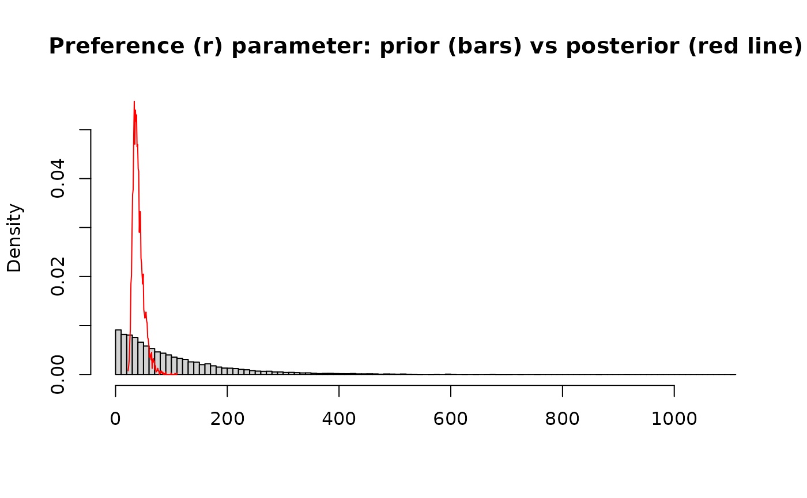

Check fitted model
check_model(fit = NULL)A fitted model, as obtained from fit_model().
Model checks on console and graphical window.
data(web)
dt <- prepare_data(mat = web, sampl.eff = rep(20, nrow(web)))
fit <- fit_model(dt)
#> Running MCMC with 4 sequential chains...
#>
#> Chain 1 Iteration: 1 / 2000 [ 0%] (Warmup)
#> Chain 1 Iteration: 100 / 2000 [ 5%] (Warmup)
#> Chain 1 Iteration: 200 / 2000 [ 10%] (Warmup)
#> Chain 1 Iteration: 300 / 2000 [ 15%] (Warmup)
#> Chain 1 Iteration: 400 / 2000 [ 20%] (Warmup)
#> Chain 1 Iteration: 500 / 2000 [ 25%] (Warmup)
#> Chain 1 Iteration: 600 / 2000 [ 30%] (Warmup)
#> Chain 1 Iteration: 700 / 2000 [ 35%] (Warmup)
#> Chain 1 Iteration: 800 / 2000 [ 40%] (Warmup)
#> Chain 1 Iteration: 900 / 2000 [ 45%] (Warmup)
#> Chain 1 Iteration: 1000 / 2000 [ 50%] (Warmup)
#> Chain 1 Iteration: 1001 / 2000 [ 50%] (Sampling)
#> Chain 1 Iteration: 1100 / 2000 [ 55%] (Sampling)
#> Chain 1 Iteration: 1200 / 2000 [ 60%] (Sampling)
#> Chain 1 Iteration: 1300 / 2000 [ 65%] (Sampling)
#> Chain 1 Iteration: 1400 / 2000 [ 70%] (Sampling)
#> Chain 1 Iteration: 1500 / 2000 [ 75%] (Sampling)
#> Chain 1 Iteration: 1600 / 2000 [ 80%] (Sampling)
#> Chain 1 Iteration: 1700 / 2000 [ 85%] (Sampling)
#> Chain 1 Iteration: 1800 / 2000 [ 90%] (Sampling)
#> Chain 1 Iteration: 1900 / 2000 [ 95%] (Sampling)
#> Chain 1 Iteration: 2000 / 2000 [100%] (Sampling)
#> Chain 1 finished in 1.2 seconds.
#> Chain 2 Iteration: 1 / 2000 [ 0%] (Warmup)
#> Chain 2 Iteration: 100 / 2000 [ 5%] (Warmup)
#> Chain 2 Iteration: 200 / 2000 [ 10%] (Warmup)
#> Chain 2 Iteration: 300 / 2000 [ 15%] (Warmup)
#> Chain 2 Iteration: 400 / 2000 [ 20%] (Warmup)
#> Chain 2 Iteration: 500 / 2000 [ 25%] (Warmup)
#> Chain 2 Iteration: 600 / 2000 [ 30%] (Warmup)
#> Chain 2 Iteration: 700 / 2000 [ 35%] (Warmup)
#> Chain 2 Iteration: 800 / 2000 [ 40%] (Warmup)
#> Chain 2 Iteration: 900 / 2000 [ 45%] (Warmup)
#> Chain 2 Iteration: 1000 / 2000 [ 50%] (Warmup)
#> Chain 2 Iteration: 1001 / 2000 [ 50%] (Sampling)
#> Chain 2 Iteration: 1100 / 2000 [ 55%] (Sampling)
#> Chain 2 Iteration: 1200 / 2000 [ 60%] (Sampling)
#> Chain 2 Iteration: 1300 / 2000 [ 65%] (Sampling)
#> Chain 2 Iteration: 1400 / 2000 [ 70%] (Sampling)
#> Chain 2 Iteration: 1500 / 2000 [ 75%] (Sampling)
#> Chain 2 Iteration: 1600 / 2000 [ 80%] (Sampling)
#> Chain 2 Iteration: 1700 / 2000 [ 85%] (Sampling)
#> Chain 2 Iteration: 1800 / 2000 [ 90%] (Sampling)
#> Chain 2 Iteration: 1900 / 2000 [ 95%] (Sampling)
#> Chain 2 Iteration: 2000 / 2000 [100%] (Sampling)
#> Chain 2 finished in 1.2 seconds.
#> Chain 3 Iteration: 1 / 2000 [ 0%] (Warmup)
#> Chain 3 Iteration: 100 / 2000 [ 5%] (Warmup)
#> Chain 3 Iteration: 200 / 2000 [ 10%] (Warmup)
#> Chain 3 Iteration: 300 / 2000 [ 15%] (Warmup)
#> Chain 3 Iteration: 400 / 2000 [ 20%] (Warmup)
#> Chain 3 Iteration: 500 / 2000 [ 25%] (Warmup)
#> Chain 3 Iteration: 600 / 2000 [ 30%] (Warmup)
#> Chain 3 Iteration: 700 / 2000 [ 35%] (Warmup)
#> Chain 3 Iteration: 800 / 2000 [ 40%] (Warmup)
#> Chain 3 Iteration: 900 / 2000 [ 45%] (Warmup)
#> Chain 3 Iteration: 1000 / 2000 [ 50%] (Warmup)
#> Chain 3 Iteration: 1001 / 2000 [ 50%] (Sampling)
#> Chain 3 Iteration: 1100 / 2000 [ 55%] (Sampling)
#> Chain 3 Iteration: 1200 / 2000 [ 60%] (Sampling)
#> Chain 3 Iteration: 1300 / 2000 [ 65%] (Sampling)
#> Chain 3 Iteration: 1400 / 2000 [ 70%] (Sampling)
#> Chain 3 Iteration: 1500 / 2000 [ 75%] (Sampling)
#> Chain 3 Iteration: 1600 / 2000 [ 80%] (Sampling)
#> Chain 3 Iteration: 1700 / 2000 [ 85%] (Sampling)
#> Chain 3 Iteration: 1800 / 2000 [ 90%] (Sampling)
#> Chain 3 Iteration: 1900 / 2000 [ 95%] (Sampling)
#> Chain 3 Iteration: 2000 / 2000 [100%] (Sampling)
#> Chain 3 finished in 1.2 seconds.
#> Chain 4 Iteration: 1 / 2000 [ 0%] (Warmup)
#> Chain 4 Iteration: 100 / 2000 [ 5%] (Warmup)
#> Chain 4 Iteration: 200 / 2000 [ 10%] (Warmup)
#> Chain 4 Iteration: 300 / 2000 [ 15%] (Warmup)
#> Chain 4 Iteration: 400 / 2000 [ 20%] (Warmup)
#> Chain 4 Iteration: 500 / 2000 [ 25%] (Warmup)
#> Chain 4 Iteration: 600 / 2000 [ 30%] (Warmup)
#> Chain 4 Iteration: 700 / 2000 [ 35%] (Warmup)
#> Chain 4 Iteration: 800 / 2000 [ 40%] (Warmup)
#> Chain 4 Iteration: 900 / 2000 [ 45%] (Warmup)
#> Chain 4 Iteration: 1000 / 2000 [ 50%] (Warmup)
#> Chain 4 Iteration: 1001 / 2000 [ 50%] (Sampling)
#> Chain 4 Iteration: 1100 / 2000 [ 55%] (Sampling)
#> Chain 4 Iteration: 1200 / 2000 [ 60%] (Sampling)
#> Chain 4 Iteration: 1300 / 2000 [ 65%] (Sampling)
#> Chain 4 Iteration: 1400 / 2000 [ 70%] (Sampling)
#> Chain 4 Iteration: 1500 / 2000 [ 75%] (Sampling)
#> Chain 4 Iteration: 1600 / 2000 [ 80%] (Sampling)
#> Chain 4 Iteration: 1700 / 2000 [ 85%] (Sampling)
#> Chain 4 Iteration: 1800 / 2000 [ 90%] (Sampling)
#> Chain 4 Iteration: 1900 / 2000 [ 95%] (Sampling)
#> Chain 4 Iteration: 2000 / 2000 [100%] (Sampling)
#> Chain 4 finished in 1.3 seconds.
#>
#> All 4 chains finished successfully.
#> Mean chain execution time: 1.2 seconds.
#> Total execution time: 5.1 seconds.
#>
check_model(fit)
#> Processing csv files: /tmp/Rtmp5QY84V/model_effort-202405071110-1-6a509c.csv, /tmp/Rtmp5QY84V/model_effort-202405071110-2-6a509c.csv, /tmp/Rtmp5QY84V/model_effort-202405071110-3-6a509c.csv, /tmp/Rtmp5QY84V/model_effort-202405071110-4-6a509c.csv
#>
#> Checking sampler transitions treedepth.
#> Treedepth satisfactory for all transitions.
#>
#> Checking sampler transitions for divergences.
#> No divergent transitions found.
#>
#> Checking E-BFMI - sampler transitions HMC potential energy.
#> E-BFMI satisfactory.
#>
#> Effective sample size satisfactory.
#>
#> Split R-hat values satisfactory all parameters.
#>
#> Processing complete, no problems detected.
